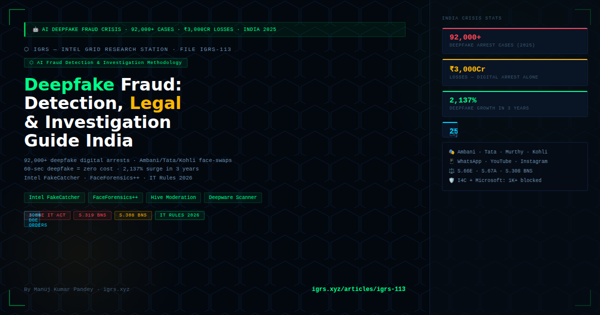

A convincing 60-second deepfake video can now be produced in under 25 minutes at zero cost. In 2025, over 92,000 deepfake digital arrest cases were reported in India. Mukesh Ambani, Ratan Tata, Narayana Murthy, Virat Kohli, Sadhguru, and Akshay Kumar have all had their faces AI-swapped into fraudulent investment platform advertisements. Deepfake fraud attempts surged 2,137% over three years — and India is at the centre of this crisis.
This guide provides India's cyber cells and investigators with a complete methodology: detection, attribution, legal sections, and evidence packaging for deepfake fraud cases.
| Type | Description | India Cases |
|---|---|---|
| Celebrity investment scam | AI face-swap of Ambani/Tata/celebrities into fake trading platform ads on Meta/YouTube/WhatsApp | Ankur Warikoo v John Doe (Delhi HC, 2025) |
| Deepfake digital arrest | AI-cloned police/CBI officers conducting WhatsApp video "arrests" — 92,000+ cases in 2025 | Delhi: 1,000 raids in 2025 |
| CEO/executive voice fraud | AI voice clone of corporate executives authorising wire transfers — ₹crore losses per incident | Bhopal corporate cases — MP unit |
| Sextortion deepfake | AI-generated intimate content using victim's social media photos — extortion demand | Nationwide, 90% women victims |
| Political deepfake | Fabricated videos of political leaders — electoral misinformation | Kejriwal jail deepfake (2024) |
| KYC bypass deepfake | AI face-swap to defeat liveness detection in KYC video calls — account takeover | Banking + fintech — growing rapidly |
I4C data (2025): 92,000+ deepfake digital arrest incidents reported. Supreme Court estimated ₹3,000 crore losses from digital arrest scams alone. I4C + Microsoft partnership blocked 1,000+ Skype IDs used in deepfake arrests. IT Rules 2026 now mandate 2-hour removal of NCII and 3-hour removal of court-ordered deepfake content.
Critical limitation: All AI detectors lose accuracy post-compression (WhatsApp/Telegram compress videos). Accuracy drops ~25% on compressed content. Always request original uncompressed file from platform via legal process for reliable forensic analysis.
| Indicator | What to Look For |
|---|---|
| Blinking pattern | Unnatural blink rate (too frequent or absent) — early GAN models struggled with eyes |
| Hairline/ear artifacts | Blurring, smearing, or unnatural edges around hair and ears — face boundary is highest-error zone |
| Lighting consistency | Face lighting direction differs from background — inconsistent shadow casting |
| Teeth/mouth | Blurring of teeth, unnatural mouth movement, lip-sync lag with audio |
| Skin texture | Overly smooth, waxy skin — GAN tends to over-smooth texture |
| Audio-visual sync | Subtle desync between lip movement and audio — especially in Hindi/regional language deepfakes (model primarily trained on English) |
| Background consistency | Background pixelation or warping around moving face boundary |
| Eye reflections | Inconsistent catchlights (light reflections in eyes) — different between left/right eye or absent |
| Section | Application | Penalty |
|---|---|---|
| S.66E IT Act | Capturing/publishing private images without consent — sextortion deepfakes, KYC deepfake | Up to 3 years + fine |
| S.67 IT Act | Publishing obscene material — NCII deepfakes | Up to 3 years + ₹5L (first) / 5 years + ₹10L (repeat) |
| S.67A IT Act | Explicit AI-generated content — deepfake pornography | Up to 5 years + ₹10L (first) / 7 years + ₹10L (repeat) |
| S.319 BNS | Cheating by personation — celebrity/officer deepfake impersonation | Up to 5 years + fine |
| S.318 BNS | Cheating — financial loss caused by deepfake fraud | Up to 7 years + fine |
| S.308 BNS | Extortion — sextortion via deepfake threat | Up to 10 years + fine |
| S.353 BNS | Defamation — reputational damage deepfakes | Up to 2 years |
| IT Rules 2026 | Platforms must remove NCII within 2 hours, court/government-ordered content within 3 hours | Platform liability for non-compliance |
| S.63 BSA 2023 | Electronic evidence certificate for deepfake video/audio evidence in court | Mandatory for admissibility |
First landmark deepfake case in India's financial fraud context. AI-generated videos using Warikoo's face and voice were used to lure victims into fraudulent WhatsApp stock tip groups. Delhi HC issued a John Doe order — injunction against unknown defendants — relying on personality rights framework from Shivaji Rao Gaikwad v Varsha Productions. This established that personality rights extend to AI-generated misuse of likeness, voice, and identity.
50-member organised syndicate used AI-cloned police officer faces for WhatsApp video arrests — extorted ₹500 crore. MCOCA (Maharashtra Control of Organised Crime Act) invoked. Special Court granted 90-day custody. Bail denied under Section 21 MCOCA citing public safety. This case established that AI-enabled organised crime qualifies for MCOCA application.
| Step | Action | Tool/Instrument |
|---|---|---|
| 1. Preserve original | Request uncompressed original from victim's device — Cellebrite/MSAB XRY extraction preferred. Hash-verify before analysis. | S.63 BSA 2023 certificate + hash log |
| 2. AI detection | Run through Intel FakeCatcher + FaceForensics++ + Deepware Scanner. Document confidence scores for court report. | AI detector tools |
| 3. Reference face sourcing | Identify which social media/public video the source face was taken from — reverse image search + timeline correlation | PimEyes, Google Lens, TinEye |
| 4. Platform data | Request metadata, creator account data, IP logs from platform via S.94 BNSS (Indian entity) or MLAT via CBI (foreign) | S.94 BNSS / MLAT |
| 5. Payment trail | Trace victim's fund transfer to mule accounts — standard financial fraud chain. UPI/bank KYC via S.94 BNSS. | S.94 BNSS to bank + I4C freeze |
| 6. Platform removal | Invoke IT Rules 2026: 2-hour window for NCII, 3-hour for court-ordered removal. StopNCII.org for hash-blocking. | IT Rules 2026 / StopNCII.org |
| 7. Expert witness | AI forensics expert required in court — prepare technical report with detection methodology, tool outputs, confidence scores. | S.63 BSA certificate on AI analysis |